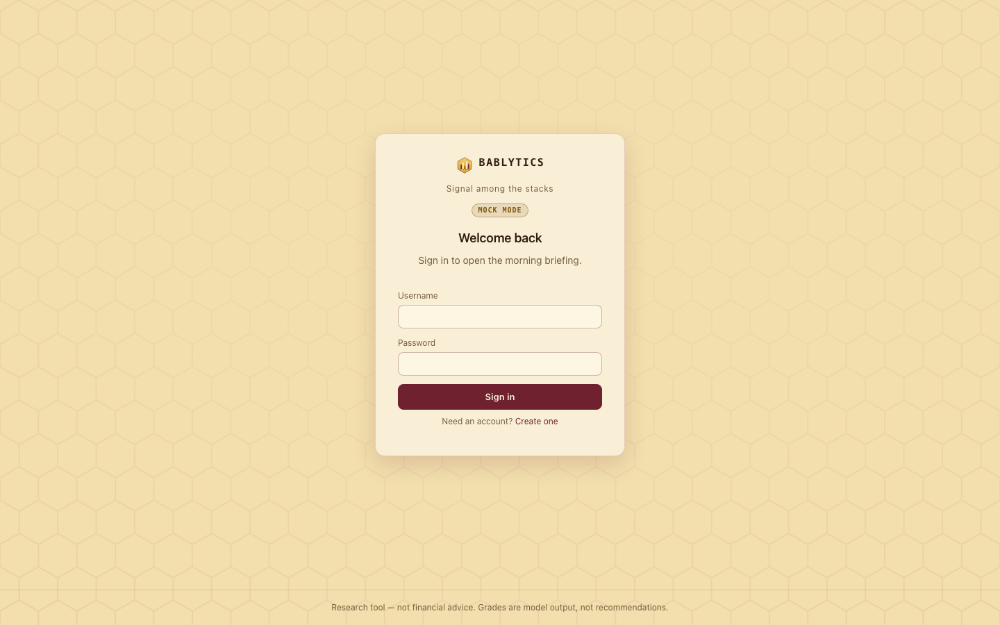

Reference · Mac · Windows · Linux
Download & install
Get the desktop app for macOS, Windows or Linux, open it past the unsigned-app warnings, create your local account, and know where your data lives.
Bablytics ships as a native desktop app for macOS (Apple silicon and Intel), Windows (x64) and Linux (x86_64). Every build is the same thing: the local server and the dashboard you see in the screenshots, frozen into one folder and opened in a native window. Nothing runs in a cloud. Version 2.0.0 is the first cross-platform release.
Downloads#
macOS 11 or newer#
- Apple silicon — Bablytics-mac-arm64.dmg · .zip
- Intel — Bablytics-mac-x86_64.dmg · .zip
Unsigned and not notarized: first launch is right-click → Open. The dmg and the zip contain the same Bablytics.app.
Windows 10 / 11 (x64)#
- Installer — Bablytics-windows-x64-setup.exe
- Portable folder — Bablytics-windows-x64.zip
The installer is per-user (no administrator rights). SmartScreen will ask once: More info → Run anyway. No ARM build.
Linux (x86_64)#
- Tarball — Bablytics-linux-x86_64.tar.gz
Built on Ubuntu 22.04 for glibc compatibility. The window needs WebKitGTK; without it the app opens in your browser instead.
seaneven-web/bablytics repository, which is currently private. They only resolve for people who have been given access to the repo. If you get a 404 or a sign-in page, ask Sean for the build directly — every release's zips and dmgs also live in the repo's dist/ folder after a local build — or wait for the repo to be made public or the assets mirrored (the owner's call; see packaging/RELEASING.md).Which build is mine?#
- Mac: open the Apple menu → About This Mac. “Chip: Apple M1/M2/M3/M4…” means arm64; “Processor: Intel…” means x86_64. Picking the wrong one is not dangerous — an Intel build runs on Apple silicon through Rosetta, only slower — but the arm64 build will not start on an Intel Mac.
- Windows: the installer is the easy path; the zip is for people who want a folder they can delete or carry on a stick. Both need 64-bit Windows 10 or 11 with Edge WebView2 (present on any current Windows; the app falls back to your browser if it is not).
- Linux: one tarball. It was built on Ubuntu 22.04, so it runs on 22.04 and anything newer; older distributions may lack the glibc it links against.
Before you double-click: the unsigned-app warnings#
Install on macOS#
- Open the
.dmgand drag Bablytics into Applications (or unzip the.zipand moveBablytics.appthere). - On first launch, right-click (Control-click) the app → Open → Open. A plain double-click shows “Bablytics can’t be opened because Apple cannot check it for malicious software” or “…is damaged”; the right-click route is Gatekeeper’s one-time allowance for unsigned apps.
- If the right-click route still refuses, clear the quarantine flag from Terminal and try again:
xattr -dr com.apple.quarantine /Applications/Bablytics.app - After the first successful open, macOS remembers your choice and the app opens normally.
Install on Windows#
- Run
Bablytics-windows-x64-setup.exe. SmartScreen shows “Windows protected your PC”: click More info → Run anyway. - The installer is per-user: it puts the app under
%LOCALAPPDATA%\Programs\Bablytics, adds a Start-menu entry (and an optional desktop shortcut) and registers an uninstaller. No administrator prompt. - Prefer the portable route? Unzip
Bablytics-windows-x64.zipanywhere and runBablytics\Bablytics.exe. Keep the whole folder together — the executable depends on the files beside it.
Install on Linux#
- Unpack:
You get atar xzf Bablytics-linux-x86_64.tar.gzBablytics/folder holding theBablyticsbinary, aninstall.sh, anuninstall.sh, abablytics.desktopentry and an icon. - Either run it in place —
./Bablytics/Bablytics(chmod +x Bablytics/Bablyticsfirst if the execute bit did not survive your download) — or install it for your user:
which copies the folder to./Bablytics/install.sh~/.local/opt/bablytics, writes~/.local/share/applications/bablytics.desktopso it appears in your app menu, and links~/.local/bin/bablytics. SetPREFIXto choose another location. - The native window needs GTK with WebKit (
gir1.2-webkit2-4.1or4.0on Debian/Ubuntu). If it is missing, the app prints its URL, opens your default browser at it, and keeps serving in the foreground — press Ctrl+C to stop it. That is a supported mode, not an error.
First launch#
- The first start takes a few seconds: the app creates its data folder, initialises the SQLite database, copies its bundled seed model for the Pulse (only if you do not already have one — it never overwrites yours), and starts the local server on
127.0.0.1:8420. If that port is taken, 2.0 picks a free one and writes it to the log instead of failing. - A window titled Bablytics opens (1440×900 by default). There is no account anywhere yet, so the sign-in card offers Create one: pick a username and a password of at least 8 characters. That is the single local account for this data folder; there is no e-mail, no verification and no password reset — keep it somewhere safe.
- You land on the dashboard in MOCK MODE (the pill by your username says so). Everything works — the board grades with deterministic heuristics instead of a language model, at zero cost. Press Run briefing now to see the whole pipeline run end to end on live market data.
- When you are ready for the real board, add an Anthropic API key (next section) and restart.

Adding an Anthropic API key#
The desktop app reads its configuration from a .env file inside the data folder (paths below) plus whatever environment variables it is launched with. There is deliberately no key field in Settings: the key lives in a file you control, is read once at start-up, and is never stored in the database.
- Quit Bablytics.
- Create a plain-text file named
.envin the data folder with one line:
On macOS and Linux the file is hidden by default; ⌘⇧. shows hidden files in Finder.ANTHROPIC_API_KEY=sk-ant-… - Start the app again. The MOCK MODE pill disappears and Settings shows Mock mode: off. Set
BABLYTICS_MOCK=1in the same file to force mock mode even with a key (handy for testing without spending).
The key is yours, billed to your Anthropic account; see the FAQ on what a key costs and what is sent to the API. BABLYTICS_MODEL in the same file changes the model (default claude-opus-4-8).
Where your data lives#
Everything the app knows — the database, caches, trained models, member dossiers, logs and your .env — sits in one folder. Nothing is written anywhere else, and nothing in it is uploaded.
| OS | Data folder |
|---|---|
| macOS | ~/Library/Application Support/Bablytics |
| Windows | %APPDATA%\Bablytics — usually C:\Users\<you>\AppData\Roaming\Bablytics |
| Linux | ~/.local/share/bablytics |
| Running from source | data/ inside the repository checkout |
- bablytics.db (+ -wal, -shm)
- The SQLite database: your account, runs, leads, grades, outcomes, journals, reviews, paper league, staged orders, settings. WAL mode, so the two sidecar files are normal.
- .env
- Your API key and any other variables (you create this).
- rl/
- The Pulse’s models: the deployed actor-critic, the five-member population and its roster, evaluation split, generation log.
- model.joblib, model.json
- The outcome model the Executive reads (trained once ≥ 25 leads have realized returns).
- members/
- One markdown dossier per board member, regenerated after each Evening Court.
- cache/
- Short-lived collector caches (analyst sweeps, disclosure downloads).
- logs/bablytics.log
- The desktop build’s log (1 MB, three rotations) — the place to look when something misbehaves.
- schwab_tokens.json
- Only if you connect Schwab: OAuth tokens, file mode 0600.
- BABLYTICS_DATA_DIR
- Environment variable that moves the whole folder somewhere else — a portable drive, a second profile, a synced directory. It wins over the per-OS default. Launch the binary with it set, e.g. on macOS
BABLYTICS_DATA_DIR=~/bablytics /Applications/Bablytics.app/Contents/MacOS/Bablytics, on LinuxBABLYTICS_DATA_DIR=~/bablytics ~/.local/bin/bablytics; on Windows set it as a user environment variable before starting the app.
Upgrading#
Install the new build over the old one — drag the new .app into Applications, run the new installer, or re-run install.sh. The data folder is never touched by an install: on start the app adds any tables and columns a newer version needs and leaves everything else alone, and the seed model is only copied where none exists. Your account, record, journals and models carry straight across. Going back to an older version after a newer one has run is not something the app guards against; take a copy of the data folder first if you intend to.
Uninstalling#
- macOS: quit, then move
Bablytics.appto the Trash. The data folder stays until you delete it yourself. - Windows: Settings → Apps → Bablytics → Uninstall (installer route), or delete the unzipped folder (portable route).
%APPDATA%\Bablyticsstays. - Linux: run
uninstall.sh(in the install folder or the tarball). It removes the app folder, the menu entry and the~/.local/binlink and never touches~/.local/share/bablytics.
Deleting the data folder is the only thing that deletes your record. If you want a clean slate without losing it, rename the folder instead; the next start creates a fresh one.
Troubleshooting#
“Bablytics is damaged and can’t be opened” (macOS)#
That is Gatekeeper wording for “unsigned download”. Use right-click → Open, or the xattr command above.
It opened in my browser instead of a window#
Expected on Linux without WebKitGTK, and whenever the app is started with BABLYTICS_BROWSER=1. The app is fully usable that way; it keeps serving until you stop it. The “Open the app” link in this Guide’s top bar appears only when the Guide is being served by the app itself.
Port 8420 is already in use#
2.0 picks another free port and logs it; open logs/bablytics.log in the data folder to find the URL. BABLYTICS_PORT pins a port of your choice.
Download PDF in the desktop window#
The export is a password-protected file the embedded web view has to be willing to save. Since 2.0 the window allows downloads, so Download PDF (and a dossier export) opens the system Save dialog, defaulting to your Downloads folder — pick a place and the file lands there. If no dialog appears (an older build, or a web view that refuses downloads), open the same address (http://127.0.0.1:8420, or the port in the log) in your regular browser, sign in, and export from there — it is the same server.
Running it without a window#
BABLYTICS_NO_WINDOW=1 starts the server only and prints BABLYTICS READY http://127.0.0.1:<port>; that is what the packaging smoke test uses, and it is a fine way to run on a machine you reach over a browser.
Environment variables the desktop app honours#
- ANTHROPIC_API_KEY
- Turns the real board on. Empty → mock mode.
- BABLYTICS_MOCK=1
- Force mock mode even with a key.
- BABLYTICS_MODEL
- Anthropic model id (default
claude-opus-4-8). - BABLYTICS_PORT
- Preferred port (default 8420; a busy port falls through to a free one).
- BABLYTICS_DATA_DIR
- Where everything is stored.
- BABLYTICS_BROWSER=1
- Skip the native window; serve and open the default browser.
- BABLYTICS_NO_WINDOW=1
- Headless: serve, print the ready line, block until stopped.
- QUIVER_API_KEY
- Live congressional-trade data for the Watchdog; without it that collector degrades to “no signal”.
Everything else — schedule times, Schwab keys, Pulse goals — is set inside the app and stored in the database; see Settings.